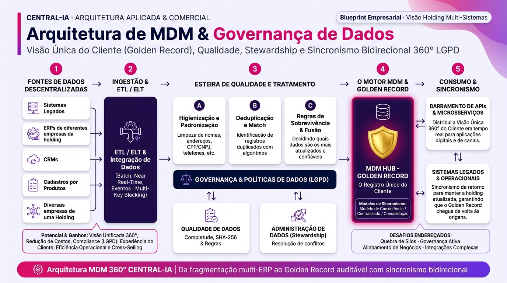

Síntese Executiva · Master Data Management (MDM) & Golden Record
Duplicações e variações cadastrais de denominação social impedem visão unificada de clientes corporativos; regra de 'data mais recente' cancela registros ativos indevidamente.
Adotar sobrevivência baseada em Confiança Regulatória (CVM) e operar resolução de entidades em duas camadas: regras normalizadas para nomes formais e modelo híbrido supervisionado para variações.
- • 81,57% de recall fim a fim (576 de 613 pares verdadeiros consolidados).
- • Regra de sobrevivência por recência diverge da hierarquia de fontes em 33 de 42 status; isso não é métrica de acurácia de pareamento.
- • PR-AUC saltou de 0,763 (baseline) para 0,884 com HistGradientBoosting sob divergência comercial CVM.
Experimento conduzido sobre 7.905 registros públicos da CVM. Divergências observadas entre DENOM_COMERC e DENOM_SOCIAL; sem inferência sobre cadastros bancários proprietários.
Parte 1. Arquitetura Completa MDM & Governança de Dados (5 Camadas)

1. Fontes Regulatórias
6 cadastros públicos CVM (cia_aberta, adm_fii, cia_incent e papéis de cad_fi) com granularidades distintas.
2. Ingestão & Blocking
Padronização de CNPJ 14 dígitos e Multi-Key Blocking evitando comparação quadrática.
3. Qualidade & Survivorship
Auditoria de completude (UF/Nome Comercial ausentes nos papéis de fundos) e regras de desempate.
4. Motor MDM Golden Record
Consolidação em 6.736 CNPJs únicos com trilha SHA-256 nos modos Consolidação, Coexistência e Centralizado.
5. Consumo 360° & Retorno
Exposição segura e devolução controlada às origens sem corromper papéis específicos de registro.
splink, dedupe, recordlinkage e zingg fundamentou o motor offline zero-dependências central/mdm.py, validado agora sobre cadastros públicos oficiais de Pessoas Jurídicas da CVM (sem exposição de PII de pessoa física).
Implementação Prática: Arquitetura Medalhão em DuckDB (Bronze → Silver → Gold)
Para viabilizar a auditoria sem dependência de serviços em nuvem ou custos de computação distribuída, implementamos o pipeline completo em DuckDB local (cvm_lakehouse.duckdb). O motor processa os 7.905 registros regulatórios brutos em menos de 250 milissegundos, organizando o ciclo de vida dos dados em três camadas com contratos estritos de qualidade:
_ingested_at e hash SHA-256 para linhagem e auditoria forense.
| ID Bruto | Fonte CVM | CNPJ Bruto | Razão Social Original | Situação Bruta | Hash SHA-256 |
|---|---|---|---|---|---|
39784 | CVM_CIA_ABERTA | 00000000000191 | ATIVO | cf87f0d02c006ca8 | |
39986 | CVM_CIA_ABERTA | 00000208000100 | ATIVO | aff5f1202f9b2d32 | |
39987 | CVM_CIA_ABERTA | 33136888000143 | CANCELADA | 173a22345d7a8ad4 | |
39988 | CVM_CIA_ABERTA | 10739356000103 | ATIVO | 4aeb7ef32c5a95e6 | |
42260 | CVM_FI_ADMIN | 33850686000169 | CANCELADA | 590fcde622a5a4dd | |
42403 | CVM_FI_ADMIN | 33923111000129 | CANCELADA | 9d68a9130545e965 |
Parte 2. Evidências Quantitativas em Dados Públicos da CVM (7.905 Registros)
Cruzando os arquivos CSV abertos de dados.cvm.gov.br, consolidamos 7.905 registros em 6.736 CNPJs únicos (-14,8%). Enquanto Companhias Abertas atingem 99,4% de completude nos 6 atributos canônicos, os papéis extraídos de Fundos de Investimento (Admin FI, Gestor PJ, Custodiante) ficam em 66,7% por omitirem UF e Nome Comercial. Entre os 813 CNPJs multi-origem, 42 apresentam conflito direto de situação (ATIVO vs CANCELADA) e 33 deles (78,6%) mudam de resultado ao trocar Confiança Regulatória por Recência.
Ver versões estáticas para download / impressão (SVG) ▾


| Modelo de Sincronismo MDM | Comportamento nas Origens | Impacto Medido (CVM · 813 multi-papel) | Leitura Executiva |
|---|---|---|---|
| Consolidação | Somente leitura no Hub MDM (sem write-back). | 0 eventos gravados nas bases de origem. | Ideal para BI e Risco de Crédito sem risco às visões regulatórias locais. |
| Coexistência | Preenche apenas lacunas vazias (ex.: UF e Nome Comercial ausentes nos papéis de FI). | 254 pacotes enriquecendo origens incompletas. | Preserva o status específico do papel (ex.: custodiante cancelado) e melhora cobertura. |
| Centralizado | Impõe o Golden Record sobre divergências de situação e razão social. | 292 pacotes (incluindo 38 sobrescritas corretivas). | Exige cautela: em registros multi-papel CVM, cancelar um papel de custódia não cancela o emissor aberto. |
Impacto Financeiro & Riscos de Negócio da Fragmentação Cadastral
Duplicidades e assimetrias em cadastros corporativos não são apenas problemas de engenharia de dados: elas impactam diretamente a rentabilidade e o risco das instituições financeiras. Sem uma visão unificada (Golden Record), áreas comerciais concedem limites de crédito desarticulados à mesma empresa, mesas de operações negociam com PJs canceladas perante órgãos reguladores, e equipes de backoffice desperdiçam milhares de horas em recadastramento manual.
Calculadora Executiva: Impacto Financeiro e ROI de Governança MDM
Simule o risco de crédito concentrado, sanções regulatórias e perdas operacionais de KYC com base nos parâmetros empíricos auditados na CVM.
Pareamento Nominal Cego sem CNPJ (Validação Cruzada 5-Fold Disjunta)
Quando fluxos externos chegam sem chave fiscal, regras e modelos respondem de forma oposta conforme o padrão da origem: na Razão Social formal (41.616 pares) a Regra Exata Normalizada lidera (F1 = 98,54% vs 97,75% do ML). Porém, sob divergência de nomes comerciais observada na CVM (DENOM_COMERC vs DENOM_SOCIAL, 26.091 pares candidatos), a Regra Exata cai para PR-AUC 0,7626 e o Matcher ML Híbrido (HistGradientBoosting) salta para PR-AUC = 0,8835 (+12,1 p.p.), recuperando siglas como SICOOB DTVM (score 0,965) e OSLO DTVM (0,908).
Ver gráfico estático / baixar SVG ▾

Parte 3. Simulador Interativo com Casos Reais da CVM (dados.cvm.gov.br)
Inspecione 3 CNPJs reais extraídos diretamente dos arquivos públicos da CVM. Alterne o caso, a regra de sobrevivência, o modo de sincronismo e a máscara documental para observar como o vencedor e os pacotes de retorno mudam:
Buscador de Entidades CVM no Golden Record (50 Instituições Mapeadas)
Consulte o veredito canônico e a linhagem das maiores instituições com múltiplos papéis regulatórios na base CVM:
Buscador de Entidades CVM: Auditoria de Linhagem no Golden Record
Inspecione qualquer uma das grandes instituições com múltiplos registros nos dados oficiais da CVM.
Nota Técnica & Metodologia Completa
Resumo executivo
Consolidar entidades jurídicas sem destruir a semântica de origem exige separar dois problemas frequentemente misturados em projetos de dados: (1) Sobrevivência e sincronismo quando há chave fiscal (CNPJ) e (2) Resolução nominal probabilística quando a chave está ausente ou corrompida. São avaliações distintas: a divergência em 33 dos 42 conflitos mede o efeito de trocar a regra determinística de sobrevivência (Confiança Regulatória vs. Recência); não mede acurácia de Entity Resolution. A acurácia de pareamento é avaliada à parte, no benchmark sem CNPJ, por métricas como PR-AUC e F1.
Sobre 7.905 registros oficiais de 6 fluxos públicos da CVM (dados.cvm.gov.br), a consolidação por CNPJ reduz o acervo em -14,8% (6.736 CNPJs únicos, 813 multi-papel) e eleva a completude para 91,1%. Entre os 813 CNPJs multi-papel, 42 possuem conflito direto de situação (ATIVO vs CANCELADA), e 78,6% deles (33 casos) mudam de resultado conforme a regra de sobrevivência adotada.
Na segunda frente — benchmark cego ocultando totalmente o CNPJ em validação cruzada de 5 folds disjuntos por entidade — testamos dois regimes reais extraídos da própria CVM:
- Regime A (Razão Social formal padronizada via RFB, 41.616 pares): A Regra Exata Normalizada atinge F1 = 98,54% (
PR-AUC 0,971), superandoTF-IDF Cosseno(98,05%) eHGB Híbrido(97,75%). - Regime B (Drift real CRM/Nome Comercial
DENOM_COMERCvsDENOM_SOCIAL, 26.091 pares): A Regra Exata despenca paraPR-AUC 0,7626, enquanto o Matcher HGB Híbrido atinge PR-AUC = 0,8835 (+12,09 p.p.) e F1 = 87,87%, recuperando pares reais abreviados com baixa similaridade de texto comoSICOOB DTVM(TF-IDF = 0,531) eOSLO DTVM(0,447).
Contexto e dados
Os dados provêm diretamente de arquivos abertos oficiais da CVM (cad_cia_aberta.csv, cad_adm_fii.csv, cad_cia_incent.csv e cad_fi.csv desdobrado nos papéis de Administrador, Custodiante e Gestor PJ):
- Completude desigual por fluxo: Companhias Abertas alcançam 99,4% de preenchimento; Administradores FII (
95,6%); Companhias Incentivadas (97,8%); enquanto Administradores, Custodiantes e Gestores PJ de Fundos permanecem em 66,7% por omitiremUFeDENOM_COMERC. - Assimetria comercial real: Em
3.449entidades cadastradas com nome fantasia (DENOM_COMERC), o apelido de mercado diverge integralmente da razão social formal (ex.:ADESENEvsADESENE ADESIVOS NO NORDESTE SA,TAMAKAVYvsAGROPECUARIA TAMAKAVY SA,SICOOB DTVMvsSICOOB DISTRIBUIDORA DE TITULOS E VALORES MOBILIARIOS LTDA).
Método e análise
O estudo é executado no pipeline src/experimento_mdm_cvm.py sobre snapshot verificável da CVM (resultados/cvm_snapshot.json):
1. Motor Determinístico Golden Record & Sincronismo (central/mdm.py): Compara sobrevivência por Confiança Regulatória (hierarquia oficial Cia Aberta > Admin FI > Admin FII) versus Recência (DT_INI_SIT) e simula write-back em 3 modos (Consolidação, Coexistência, Centralizado).
2. Benchmark Cego de Record Linkage (5-fold sem vazamento de CNPJ): Remove o CNPJ de todas as etapas (blocking e features). Gera blocos candidatos por tokens raros (DF <= 120, excluindo stopwords jurídicas como SA, LTDA, DTVM, FUNDO) + prefixos de 6 e 4 caracteres, garantindo zero compartilhamento de componentes conectados de CNPJ entre treino e validação nos 5 folds. Compara 3 modelos competitivos: (a) Regra Exata Normalizada, (b) TF-IDF Caracteres (3-4 gramas) Cosseno com limiar calibrado exclusivamente no fold de treino, e (c) HistGradientBoosting Híbrido usando tfidf_cos, SequenceMatcher ratio, token_jaccard, token_overlap_min, substring_hit e uf_conflict.
Resultados e interpretação
Parte A — Conflitos de Sobrevivência e Write-Back (Com Chave CNPJ)
- Transferência de autoria em 813 CNPJs multi-origem:
ConfiançapriorizaCIA_INCENT(397),CIA_ABERTA(217) eFI_ADMIN(193).Recênciatransfere 92 vitórias para Admin FII e 46 para Gestor FI, invertendo 33 dos 42 conflitos deSIT(78,6%). - Efeitos do retorno às origens:
Consolidaçãorealiza0gravações;Coexistênciainjeta 254 pacotes preenchendoUFeNome Comercialfaltantes nos papéis de fundos;Centralizadodispara 292 eventos com 38 sobrescritas, corrompendo papéis locais específicos quando uma custódia encerrada sobrescreve um emissor ativo.
Parte B — Pareamento Cego sem CNPJ (5-Fold Disjunto por Entidade)
| Regime Real da Fonte Externa | Modelo | Precisão | Revocação | F1 Out-of-Fold | PR-AUC |
|---|---|---|---|---|---|
Regime A · Razão Social Formal (41.616 pares) |
Regra Exata Normalizada | 97,13% | 100,00% | 98,54% | 0,9713 |
| Regime A · Razão Social Formal | TF-IDF Char (3-4g) Cosseno | 97,10% | 99,01% | 98,05% | 0,9544 |
| Regime A · Razão Social Formal | Matcher ML Híbrido (HGB) | 95,75% | 99,84% | 97,75% | 0,9457 |
Regime B · Drift Comercial/CRM (26.091 pares) |
Regra Exata Normalizada | 90,15% | 84,20% | 87,07% | 0,7626 |
| Regime B · Drift Comercial/CRM | TF-IDF Char (3-4g) Cosseno | 90,06% | 83,33% | 86,56% | 0,8208 |
Regime B · Drift Comercial/CRM (26.091 pares) |
Matcher ML Híbrido (HGB) | 88,97% | 86,81% | 87,87% | 0,8835 |
Exemplos reais de siglas comerciais recuperadas pelo HGB Híbrido onde a regra exata falha (score ML >= 0,90 apesar de cosseno baixo):
SICOOB DTVM(Admin FII) ↔SICOOB DISTRIBUIDORA DE TÍTULOS E VALORES MOBILIÁRIOS LTDA.(FI Admin/Gestor) →ml_score = 0,965(tfidf = 0,531).OSLO DTVM(Admin FII) ↔OSLO CAPITAL DISTRIBUIDORA DE TÍTULOS E VALORES MOBILIÁRIOS S.A.(FI Admin) →ml_score = 0,908(tfidf = 0,447).
Conclusão e implicação prática
A arquitetura MDM vencedora é híbrida e condicionada ao regime de qualidade da origem:
1. Chave fiscal íntegra: Resolver por CNPJ, usar Confiança Regulatória para atributos mestres sem deixar papéis secundários cancelados invalidarem companhias ativas, e restringir o write-back ao modo Coexistência (254 enriquecimentos sem perda de contexto local).
2. Sem CNPJ, com Razão Social formal: Manter Regra Exata Normalizada (F1 = 98,54%), evitando custo e opacidade de ML desnecessário.
3. Sem CNPJ, com Nome Comercial/CRM abreviado: Empregar Matcher HGB Híbrido (PR-AUC = 0,8835, +12,1 p.p. vs regra exata) aproveitando features de contenção (token_overlap_min, substring_hit) e âncora geográfica (uf_conflict).
Fronteiras de validade e síntese final
- Perda de Blocking e Revocação End-to-End: O blocking comercial recuperou 576 dos 613 pares verdadeiros (93,96%), descartando 37 pares (6,04%) antes de chegarem ao classificador. Com isso, embora o classificador HGB Híbrido alcance PR-AUC de 0,8835 e revocação out-of-fold de 86,81% entre os candidatos gerados, a revocação completa do pipeline (end-to-end recall) fica limitada em 81,57% (500 de 613 pares verdadeiros consolidados). A partição em 5 folds utilizou componentes conexos de CNPJs para garantir zero vazamento de entidades entre treino e teste.
- Fronteira de cobertura nominal: Os ~6% excluídos no blocking correspondem a mudanças totais de marca entre razão social e fantasia sem nenhum token ou prefixo comum (ex.:
AES TIETE ENERGIA S.AvsCIA BRASILIANA DE ENERGIA), que nenhum pareador puramente textual consegue unir sem grafo societário histórico ou chave externa. - Reprodutibilidade offline: Todo o pipeline e o snapshot oficial (
resultados/cvm_snapshot.json) rodam integralmente offline a partir decodigo/estudo-02-mdm-cvm/src/experimento_mdm_cvm.py.